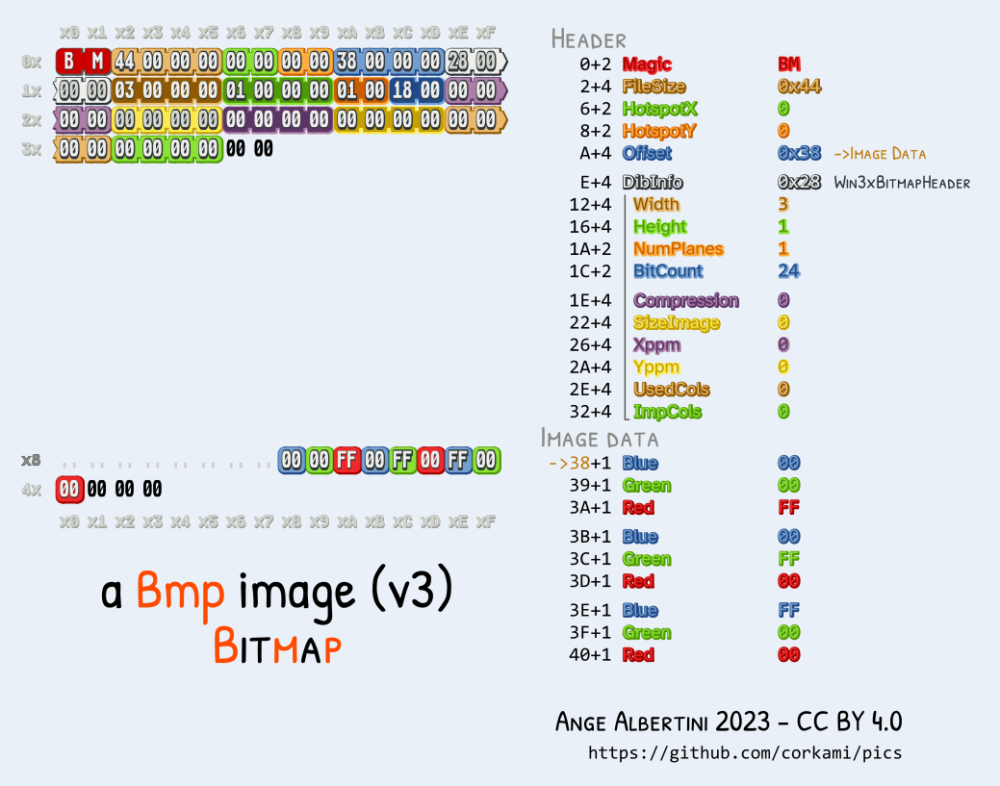
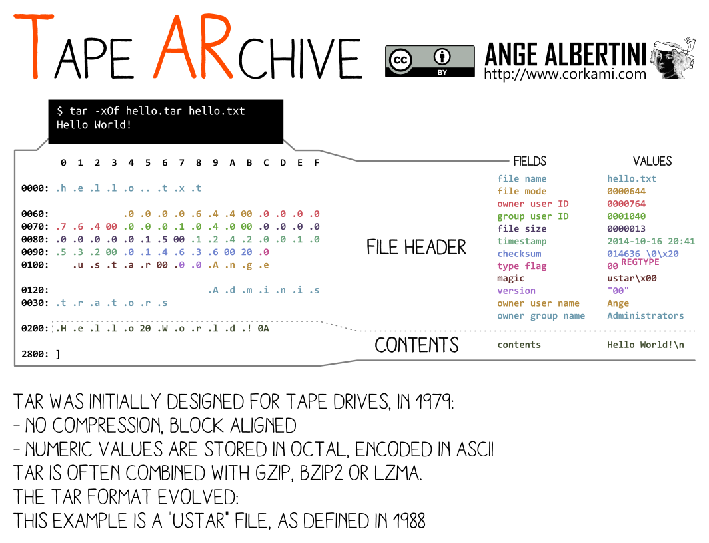
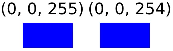

Hacking Bootcamp S1: What’s a JPEG?
Today
- File commands
- File formats
- Magic bytes and file structures
- Metadata and hidden information
- Abusing file formats
- Embedded files
- Polyglots
- Steganography basics
- Disk storage
- Filesystems
- Partitions and disk images
- Hack time!
Download ImHex please
Some more commands
touch
Change file timestamps Create files
touch FILE
$ ls A $ touch B C D $ ls A B C D
cp
Copy files and directories
cp SRC DST
$ ls A $ cp A B $ ls A B
Can also specify a target directory to copy files into it with the original names
cp SRC DST-DIR
$ ls -la total 0 drwx------ 1 alvar alvar 6 Oct 18 10:17 . drwxrwxrwt 1 root root 12802 Oct 18 10:19 .. -rw-r--r-- 1 alvar alvar 0 Oct 18 10:15 A drwxr-xr-x 1 alvar alvar 2 Oct 18 10:17 D1 $ ls -la D1 total 0 drwxr-xr-x 1 alvar alvar 0 Oct 18 10:17 . drwx------ 1 alvar alvar 6 Oct 18 10:17 .. $ cp A D1 $ ls -la D1 total 0 drwxr-xr-x 1 alvar alvar 2 Oct 18 10:17 . drwx------ 1 alvar alvar 6 Oct 18 10:17 .. -rw-r--r-- 1 alvar alvar 0 Oct 18 10:17 A
For directories (copy all files contained)
cp -r SRC DST
mv
Move (or rename) files
mv SRC DST
$ ls -l total 0 -rw-r--r-- 1 alvar alvar 0 Oct 18 10:15 A $ mv A B $ ls -l total 0 -rw-r--r-- 1 alvar alvar 0 Oct 18 10:15 B
Can also specify a target directory.
mv SRC DST-DIR
$ ls -l total 0 -rw-r--r-- 1 alvar alvar 0 Oct 18 10:15 A drwxr-xr-x 1 alvar alvar 0 Oct 18 10:21 D1 $ mv A D1/ $ ls -l total 0 drwxr-xr-x 1 alvar alvar 2 Oct 18 10:22 D1 $ ls -l D1 total 0 -rw-r--r-- 1 alvar alvar 0 Oct 18 10:15 A
rm
Remove files
rm FILE
$ ls -la total 0 drwx------ 1 alvar alvar 4 Oct 18 14:42 . drwxrwxrwt 1 root root 12546 Oct 18 14:42 .. -rw-r--r-- 1 alvar alvar 0 Oct 18 14:42 A -rw-r--r-- 1 alvar alvar 0 Oct 18 14:42 B $ rm A $ ls -la total 0 drwx------ 1 alvar alvar 2 Oct 18 14:42 . drwxrwxrwt 1 root root 12546 Oct 18 14:42 .. -rw-r--r-- 1 alvar alvar 0 Oct 18 14:42 B
-r flag again for recursive removal
rm -r DIR
$ ls -la total 0 drwx------ 1 alvar alvar 4 Oct 18 10:23 . drwxrwxrwt 1 root root 12802 Oct 18 10:23 .. drwxr-xr-x 1 alvar alvar 0 Oct 18 10:23 D1 $ rm -r D1 $ ls -la total 0 drwx------ 1 alvar alvar 0 Oct 18 10:23 . drwxrwxrwt 1 root root 12802 Oct 18 10:23 ..
curl
Transfer a URL Make a request and show result
curl URL
$ curl https://httpbin.org/uuid
{
"uuid": "9f213496-f49e-4554-9f12-ebae5dbbcb56"
}
Can also save the results into a file
curl -O URL
$ curl -O https://httpbin.org/uuid
$ ls
uuid
$ cat uuid
{
"uuid": "50785cd7-1b45-45a7-b352-ef4deb41104b"
}
As always, you could also redirect it into a file (curl https://httpbin.org/uuid >FILE)
wget
Download file
Like curl -O
$ wget https://httpbin.org/uuid
--2025-10-18 10:30:52-- https://httpbin.org/uuid
Resolving httpbin.org (httpbin.org)... 3.222.43.217, 35.171.138.34, 54.157.190.211, ...
Connecting to httpbin.org (httpbin.org)|3.222.43.217|:443... connected.
HTTP request sent, awaiting response... 200 OK
Length: 53 [application/json]
Saving to: ‘uuid’
uuid 100%[=================================================================>] 53 --.-KB/s in 0s
2025-10-18 10:30:52 (325 KB/s) - ‘uuid’ saved [53/53]
$ cat uuid
{
"uuid": "8f135901-5b01-49ac-a384-5d1ae7d2c299"
}
less
Displays the content of a file paged
less FILE
$ less flag.txt TRY IT YOURSELF
history
Show history list (commands ran)
history
$ history 1 ls 2 pwd 3 cd ~ 4 ls 5 id
clear
Clears terminal screen
clear
$ clear TRY IT YOURSELF
Hacking
By convention sweet is sweet, bitter is bitter, hot is hot, cold is cold, color is color; but in truth there are only atoms and the void. — Democritus
What language is?
#include/*
q="""*/<stdio.h>
int main() {putchar('C'); if(sizeof('C') - 1);
else {putchar('+'); putchar('+');}} /*=;
print'Perl'#";print'Ruby'#""";print('Python')#*/
Many
$ gcc code.c && ./a.out C $ g++ code.c && ./a.out C++ $ python3 code.c Python $ perl code.c Perl $ ruby code.c Ruby
C
#include/* q="""*/<stdio.h> int main() {putchar('C'); if(sizeof('C') - 1); else {putchar('+'); putchar('+');}} /*=; print'Perl'#";print'Ruby'#""";print('Python')#*/
Python
#include/* q="""*/<stdio.h> int main() {putchar('C'); if(sizeof('C') - 1); else {putchar('+'); putchar('+');}} /*=; print'Perl'#";print'Ruby'#""";print('Python')#*/
How come that’s Python/C/C++/Perl/Ruby?
When you try to compile/interpret source code the compiler/interpreter tries to interpret the source according to the corresponding language rules.
What’s a file format?
Programming languages define what constructs can be present and what operations they represent.
Likewise, file formats specify what data is stored in the file, their encoding, and what meaning it has.
Applications are programmed to interpret the file contents (bytes) and do something appropriate with them.
E.g., image viewers draw the image, audio players reproduce the sound.
Common structure
File format specifications are up for grabs, they can be defined any way.
Nonetheless, most file formats can be separated in three separate parts.
Header: First part of the data, contains directives that specify how must the rest of the data be interpreted (e.g., pixel format for images) or some extra informational data (e.g., music artist, geolocation).
Data/payload: Part enclosed by the header and footer. Contains the expected content of the file (e.g., image representation for images, audio information for audio).
Footer/trailer: Last part of the data, may contain extra information not included in the header and some integrity information.
BMP

Magic bytes
File headers (and so, the file itself) usually start with some predetermined bytes that specify what file format is being followed. These are called signatures, magic bytes or magic numbers.
Example file signatures:
| File format | Magic | ASCII |
|---|---|---|
| PNG | 89 50 4E 47 0D 0A 1A 0A | .PNG…. |
| JPG/JFIF | FF D8 FF E0 | …. |
| 25 50 44 46 2D | %PDF- | |
| ZIP | 50 4B 03 04 | PK.. |
| ELF | 7F 45 4C 46 | .ELF |
$ xxd -l 16 mystery 00000000: 8950 4e47 0d0a 1a0a 0000 000d 4948 4452 .PNG........IHDR
Metadata
The data in the header and footer is usually called metadata as it specifies properties of the main data stored in the middle section.
Some fields in this sections can be modified without having any impact in the rest of the file (good for hiding things).
exiftool
Read and write meta information from files
exiftool FILE
$ exiftool mystery.png ExifTool Version Number : 13.25 File Name : mystery.png Directory : Investigative Reversing 0 File Size : 125 kB File Modification Date/Time : 2025:09:13 10:17:50-05:00 File Access Date/Time : 2025:10:18 11:09:56-05:00 File Inode Change Date/Time : 2025:09:13 10:17:50-05:00 File Permissions : -rw-r--r-- File Type : PNG File Type Extension : png MIME Type : image/png Image Width : 1411 Image Height : 648 Bit Depth : 8 Color Type : RGB Compression : Deflate/Inflate Filter : Adaptive Interlace : Noninterlaced SRGB Rendering : Perceptual Gamma : 2.2 Pixels Per Unit X : 5669 Pixels Per Unit Y : 5669 Pixel Units : meters Warning : [minor] Trailer data after PNG IEND chunk Image Size : 1411x648 Megapixels : 0.914
mediainfo
Reads metadata for media file type.
mediainfo FILE
$ mediainfo mystery.png General Complete name : mystery.png Format : PNG Format/Info : Portable Network Graphic File size : 122 KiB Image Format : PNG Format/Info : Portable Network Graphic Compression : Deflate Format settings : Linear Width : 1 411 pixels Height : 648 pixels Display aspect ratio : 2.2:1 Color space : RGB Bit depth : 8 bits Compression mode : Lossless Stream size : 122 KiB (100%) Gamma : 0.455
What about file extensions?
File extensions are just part of the filename, they are for referential purposes only.
As they are part of the filename, changing the file extension changes nothing
about the contents itself. Changing image.png to image.jpg does not change the
fact that the bytes in the file represent an image in the PNG format.
Nonetheless, some applications (e.g., Windows File Explorer) associate programs with file extensions and when the user asks to open a file the associated program is invoked.
TAR

ImHex demo
PNG

Specification detailed at https://www.w3.org/TR/png/
$ xxd -l 128 mystery.png 00000000: 8950 4e47 0d0a 1a0a 0000 000d 4948 4452 .PNG........IHDR 00000010: 0000 0583 0000 0288 0802 0000 00ad f072 ...............r 00000020: 9900 0000 0173 5247 4200 aece 1ce9 0000 .....sRGB....... 00000030: 0004 6741 4d41 0000 b18f 0bfc 6105 0000 ..gAMA......a... 00000040: 0009 7048 5973 0000 1625 0000 1625 0149 ..pHYs...%...%.I 00000050: 5224 f000 00ff a549 4441 5478 5eec dd79 R$.....IDATx^..y 00000060: 5c15 d5ff 3ff0 b897 e5b2 cabe 08c8 e276 \...?..........v 00000070: dd71 474d 2573 c11d 3315 9714 9712 b7c2 .qGM%s..3.......
It’s all on the opening application
As with source code, a file does not have an inherent type to it, it all depends as to whether is valid for some purpose. (Can you listen to a JPEG?)
A image file viewer will be able to open diverse image files (e.g., PNG, JPEG, BMP) by identifying the image type (using the magic bytes) and continuing the parsing and display accordingly.
The same image file could be opened with exiftool and it will print the metadata.
Finally, it can be opened by text editors and it will probably try to interpret
the bytes as ASCII or UTF-8, which will likely result on some weird output to
the screen due to many characters being unprintable (recall: ASCII is not
defined for 0x80-0xFF bytes).
Exercises
- Glory of the Garden https://play.picoctf.org/practice/challenge/44
- extensions https://play.picoctf.org/practice/challenge/52
- So Meta https://play.picoctf.org/practice/challenge/19
- Lookey here https://play.picoctf.org/practice/challenge/279
- CanYouSee https://play.picoctf.org/practice/challenge/408
- Enhance! https://play.picoctf.org/practice/challenge/265
- Mob psycho https://play.picoctf.org/practice/challenge/420
Hiding files
File formats usually have some parts in which extra data can be added without perturbing the file correctness.
PNG + ANY
PNG files can contain data after the IEND chunk. So we can concatenate any data
to our PNG and it will be there for someone who tries to search for it.
binwalk
Identify and extract files embedded inside other files
binwalk FILE
$ cat cat.png confidential.pdf >cat-confidential.png
$ file cat-confidential.png
cat-confidential.png: PNG image data, 1663 x 2057, 8-bit/color RGBA, non-interlaced
$ binwalk cat-confidential.png
/tmp/tmp.qf3FR0nhhC/cat-confidential.png
----------------------------------------------------------------------------------------------------------------------------------------------
DECIMAL HEXADECIMAL DESCRIPTION
----------------------------------------------------------------------------------------------------------------------------------------------
0 0x0 PNG image, total size: 2856846 bytes
2856846 0x2B978E PDF document, version 1.7
----------------------------------------------------------------------------------------------------------------------------------------------
Analyzed 1 file for 85 file signatures (187 magic patterns) in 6.0 milliseconds
Extract the found files.
binwalk -e FILE
Polyglots
In fact, there are some combinations of formats that can apply to a same file at the same time.
PNG + ZIP
While most file formats are read from start to end, ZIP files are read
backwards. Therefore, concatenating a PNG and ZIP files results in a valid PNG and ZIP, there’s
no need to carve the data out with binwalk.
$ cat cat.png hello.zip >cat-hello.png $ file cat.png cat.png: PNG image data, 1663 x 2057, 8-bit/color RGBA, non-interlaced $ unzip cat-hello.png Archive: cat-hello.png warning [cat-hello.png]: 2856846 extra bytes at beginning or within zipfile (attempting to process anyway) extracting: hello.txt $ cat hello.txt Hello, world
Much more elaborate combinations are possible.
Some tools
Remember
file: Determine file type (using signatures)
xxd: Do a hexdump or reverse it
strings: Search for printable characters in files
Tip: always run strings
pngcheck
Test PNG files for corruption, and print size/type info.
Shows more information.
pngcheck -v FILE
$ pngcheck -v advanced-potion-making-orig.png
File: advanced-potion-making-orig.png (30372 bytes)
this is neither a PNG or JNG image nor a MNG stream
ERRORS DETECTED in advanced-potion-making-orig.png
$ pngcheck -v flag.png
File: like1000/flag.png (13114 bytes)
chunk IHDR at offset 0x0000c, length 13
1642 x 1095 image, 24-bit RGB, non-interlaced
chunk sRGB at offset 0x00025, length 1
rendering intent = perceptual
chunk gAMA at offset 0x00032, length 4: 0.45455
chunk pHYs at offset 0x00042, length 9: 5669x5669 pixels/meter (144 dpi)
chunk IDAT at offset 0x00057, length 13007
zlib: deflated, 32K window, fast compression
chunk IEND at offset 0x03332, length 0
No errors detected in like1000/flag.png (6 chunks, 99.8% compression).
ImHex
A Hex Editor for Reverse Engineers, Programmers.
Allows to read and edit the bytes in a file.
imhex FILE

Stego
As before, data can be hidden inside other file format, this can be made covert in many levels.
Before we saw that some formats allow concatenating data to the end of the file.
We could also store arbitrary information in the informational fields, e.g.,
store some string in the Album Author field of a MP3 file, or even a whole
image (whether in binary, hex, or base64).
LSB (least significant bit) in images
As images (usually) represent pixels as RGB triplets (or RGBA with the alpha—transparency—channel), we could write a message of our choosing using the least significant bits in each pixel channel
As the least significant bit in each value is the one with the least impact in the value itself, the image won’t look different from the original to the naked eye.

Example
If we wanted to hide the string hello
(0b110100001100101011011000110110001101111) in an image, we would take the first
(top left) RGB tripet (e.g, if the image was all red each triplet would be 255,
0, 0), replace the least significant bit in the R value with the first bit (1) of our message:
255 = 0b11111111 → 0b11111111
The first bit in the G value with the second (1): 0 = 0b00000000 → 0b00000001
The first bit in the B value with the third (0): 0 = 0b00000000 → 0b00000000
And then on the second RGB triplet for the rest of the bits.
First bit of R part of second triplet with fourth bit in message (1)
255 = 0b11111111 → 0b11111111
And so on until the message was completely hidden in the image.
Tools
zsteg
Check for LSB (and others) steganography on images.
zsteg IMAGE
$ zsteg image.png
b1,r,lsb,xy .. text: "^5>R5YZrG"
b1,rgb,lsb,xy .. text: "picoCTF{r3d4c73d_f14g}"
b1,abgr,msb,xy .. file: PGP Secret Sub-key -
b2,b,lsb,xy .. text: "XuH}p#8Iy="
b3,abgr,msb,xy .. text: "t@Wp-_tH_v\r"
b4,r,lsb,xy .. text: "fdD\"\"\"\" "
b4,r,msb,xy .. text: "%Q#gpSv0c05"
b4,g,lsb,xy .. text: "fDfffDD\"\""
b4,g,msb,xy .. text: "f\"fff\"\"DD"
b4,b,lsb,xy .. text: "\"$BDDDDf"
b4,b,msb,xy .. text: "wwBDDDfUU53w"
b4,rgb,msb,xy .. text: "dUcv%F#A`"
b4,bgr,msb,xy .. text: " V\"c7Ga4"
b4,abgr,msb,xy .. text: "gOC_$_@o"
stegsolve.jar
Shows different planes of an image by isolating parts of the RGB values.
Installation and running:
$ wget http://www.caesum.com/handbook/Stegsolve.jar -O stegsolve.jar $ java -jar stegsolve.jar
Exercises
Storing files
File systems
A file system (FS) specifies how data is organized in a storage device.
It manages:
- file names
- directory structure
- ownership
- permissions
- timestamps
- how data is stored in the bytes of the device
File systems vary in how they implement these features, but we may see some commonalities.
OS interprets the file system
As with file formats, the file system also has an specification that it must follow and that the OS implements to allow the user to interact with it (read files, create directories, etc).
Inodes
Information about files and directories (e.g., ownership, permissions, timestamps) in the filesystem are stored in inodes (index nodes).
A directory is a list of inodes with their assigned names. The list includes an entry for itself, its parent, and each of its children.
Inodes are identified by an unsigned integer.
$ stat /etc/hosts File: /etc/hosts Size: 172 Blocks: 8 IO Block: 4096 regular file Device: 0,28 Inode: 89317123 Links: 1 Access: (0644/-rw-r--r--) Uid: ( 0/ root) Gid: ( 0/ root) Access: 2026-03-14 20:12:40.159218388 +0000 Modify: 2026-03-14 20:12:40.441171757 +0000 Change: 2026-03-14 20:12:40.441171757 +0000 Birth: 2026-03-14 20:12:40.159218388 +0000
Ownership
Indicates the user and group that control a file and can change permissions.
$ ls -l /etc/hosts -rw-r--r-- 1 root root 172 Mar 14 20:33 /etc/hosts
Permissions
Controls what operations can be done by which users on files/directories.
The most common permissions are:
- r(ead): Read file
- w(rite): Write to file
- x(ecute): Execute file as a program
These permissions have different semantics for directories.
File systems (and operating systems) may allow setting more elaborate permissions.
It’s up to the operating system to honour the file permission.
If I take your drive and put it in my computer, it won’t matter that the files are owned by your user in your computer. I’m the master of my OS and can tell it to open them nonetheless.
Timestamps
Timestamps that carry information about file usage.
- atime: Time the file was last read
- mtime: Time the file’s content was last modified
- ctime: Time the file’s metadata (e.g., ownership, permissions) was last modified
$ stat /etc/hosts File: /etc/hosts Size: 172 Blocks: 8 IO Block: 4096 regular file Device: 0,28 Inode: 89317846 Links: 1 Access: (0644/-rw-r--r--) Uid: ( 0/ root) Gid: ( 0/ root) Access: 2026-03-14 20:33:43.665962143 +0000 Modify: 2026-03-14 20:33:44.129940226 +0000 Change: 2026-03-14 20:33:44.129940226 +0000 Birth: 2026-03-14 20:33:43.665962143 +0000
File deletions
When you delete a file, your OS modifies the FS to make it so that the file is no longer marked as present (and the metadata in the inode may be removed) and the space it occupied is free for reuse.
This most commonly means that while the space that the file occupied is now free for use by other files, the file contents are still there in the bytes of the device.
This is the basis for file recovery applications and why it’s unsafe to simply
rm files from a computer.
Partition tables
Disk devices can be (and usually are) divided into partitions that can each hold a FS.
Most Linux installations create three partitions in the main disk, boot (boot specific files), root (most files), and swap (swap space for RAM); but partitions schemas can vary to the user’s desire (though boot is needed).
Sectors and blocks
Too hard :(
Image files
File containing a bit-for-bit copy of a storage device.
Includes partition tables, filesystems, and whatever data is stored in them.
We will work with .img files.
Tools
fdisk
Show/manipulate disk partition tables
List partitions
fdisk -l DEVICE
$ fdisk -l 'disk.flag.img' disk.flag.img: 1 GiB, 1073741824 bytes, 2097152 sectors Units: sectors of 1 * 512 = 512 bytes Sector size (logical/physical): 512 bytes / 512 bytes I/O size (minimum/optimal): 512 bytes / 512 bytes Disklabel type: dos Disk identifier: 0x6062d30a Device Boot Start End Sectors Size Id Type Dear Diary/disk.flag.img1 * 2048 616447 614400 300M 83 Linux Dear Diary/disk.flag.img2 616448 1140735 524288 256M 82 Linux swap / Solaris Dear Diary/disk.flag.img3 1140736 2097151 956416 467M 83 Linux
stat
Display file or file system status
stat FILE
$ stat /etc/hosts File: /etc/hosts Size: 172 Blocks: 8 IO Block: 4096 regular file Device: 0,28 Inode: 89317123 Links: 1 Access: (0644/-rw-r--r--) Uid: ( 0/ root) Gid: ( 0/ root) Access: 2026-03-14 20:12:40.159218388 +0000 Modify: 2026-03-14 20:12:40.441171757 +0000 Change: 2026-03-14 20:12:40.441171757 +0000 Birth: 2026-03-14 20:12:40.159218388 +0000
losetup
Set up loop devices to mount file systems from image files
Create a loop device to allow mounting file systems from a file.
losetup --show -f -P FILE
$ sudo losetup --show -f -P disk.flag.img /dev/loop0 $ ls -l /dev/loop0* brw-rw---- 1 root disk 7, 0 Oct 18 13:49 /dev/loop0 brw-rw---- 1 root disk 259, 3 Oct 18 13:49 /dev/loop0p1 brw-rw---- 1 root disk 259, 4 Oct 18 13:49 /dev/loop0p2 brw-rw---- 1 root disk 259, 5 Oct 18 13:49 /dev/loop0p3
Remove all loop device created by the previous command.
losetup -D
$ sudo losetup -f -P disk.flag.img $ ls -l /dev/loop0* brw-rw---- 7,0 root 18 Oct 13:50 /dev/loop0
mount
Mount a file system
mount SRC-DEVICE MOUNT-POINT
$ sudo mount /dev/loop0p1 /media/m1 $ ls /media/m1 boot extlinux.conf ldlinux.c32 libcom32.c32 lost+found menu.c32 vesamenu.c32 config-virt initramfs-virt ldlinux.sys libutil.c32 mboot.c32 System.map-virt vmlinuz-virt
umount
Umount a file system
umount MOUNT-POINT
$ sudo umount /media/m1
Sleuthkit
The Sleuth Kit is an open source forensic toolkit for analyzing Microsoft and UNIX file systems and disks.
mmls
Display partition layout of a volume system
mmls IMG
fls
List file and directory names in a disk image
fls IMAGE [INODE]
Recursively display directories
fls -r [INODE]
Display files in time machine format for mactime use
fls -m PREFIX
Specify the sector offset where the file system starts in the image
fls -o SECTOR_OFFSET
icat
Output the contents of a file based on its inode number
icat IMG INODE
tsk_recover
Export files from an image into a local directory
tsk_recover IMG DIR
Recover allocated files (not deleted)
tsk_recover -a
Recover all fies (allocated and unallocated)
tsk_recover -e
Sector offset for a volume to recover
tsk_recover -o OFFSET
Recover files from directory inode
tsk_recover -d DIR_INODE
mactime
Create an ASCII time line of file activity
mactime -b BODYFILE
Exercises
- Sleuthkit Apprentice https://play.picoctf.org/practice/challenge/300
- Disk, disk, sleuth! https://play.picoctf.org/practice/challenge/113
- Disk, disk, sleuth! II https://play.picoctf.org/practice/challenge/137
- DISKO 1 https://play.picoctf.org/practice/challenge/505
- DISKO 2 https://play.picoctf.org/practice/challenge/506
- DISKO 3 https://play.picoctf.org/practice/challenge/507
- Operation Orchid https://play.picoctf.org/practice/challenge/285
Exercises (Extra)
- Redaction gone wrong https://play.picoctf.org/practice/challenge/290
- advanced-potion-making https://play.picoctf.org/practice/challenge/205
- Pitter, Patter, Platters https://play.picoctf.org/practice/challenge/87?category=4&page=5
- WhitePages https://play.picoctf.org/practice/challenge/51
- MSB https://play.picoctf.org/practice/challenge/359